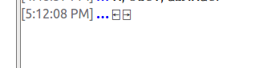
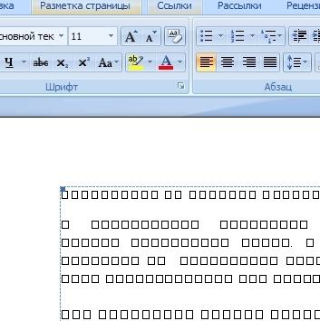
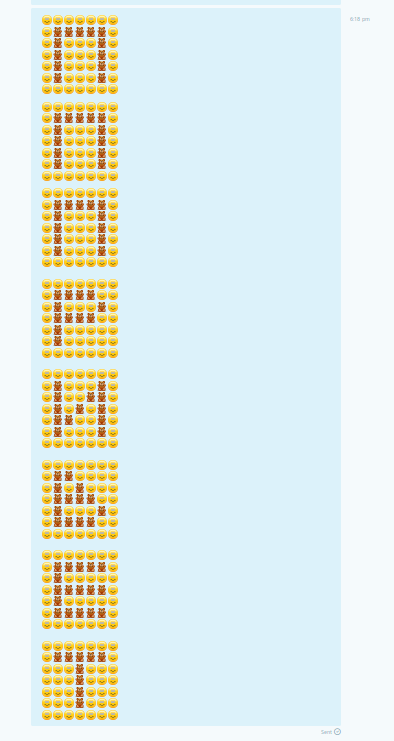

Свежий и прятный воздух в офисе - избитая тема. О предстоящем проветривании в Skype отравляется сообщение. Очевидно, что одинаковые сообщения вроде проветривание? быстро надоели. Хочеться написать то же, только необычным способом. Просто для того, чтобы кто-нибудь в комнате улыбнулся... Сначала я отправлял сообщения вроде ?еинавиртеворп, ПрОвЕтРиВаНиЕ? и т.д. Или писал слово на нескольких строках, например:
П Р О В Е Т Р И В А Н И Е ?или
Р В Т И А И ? П О Е Р В Н Е
Но креатив в этом направлении быстро закончился. Так что я стал изучать другие пути.
Первое, что ассоциируется со словом "текст" - это псевдографика и ASCII-арт. Казалось бы, возможности огромные. Можно воспользоваться готовым генератором, который поможет быстро подобрать шрифт и стиль текста под настроение. Или даже "нарисовать" сообщение вручную. Но в реальности ничего не получается. Дело в том, что в Skype (и в клиенте для Windows, и в клиенте для Linux, и в Web-приложении) не используется моноширинный шрифт. Почему не используется моноширинный шрифт? Сложно сказать. Не сказал бы, что он некрасивый. Это раньше был только Fixedsys и Courier. Сейчас же появилось множество моноширинных шрифтов с привлекательным видом. Расточительство рабочего пространства? Ну не знаю, в версии для Windows и в Web-приложении собственно область сообщений по ширине занимает всего лишь третью часть всего окна. Скорее всего, используется шрифт, установленный по умолчанию в операционной системе (по крайней мере Linux-версия использует глобальные настройки графического окружения). Как бы то ни было, символы разной ширины не дают насладиться псевдографикой и ASCII-артом. Возьмем, к примеру, следующий псевдографический текст:
_ _ _ _ _ ___ _ _ _ _ __
| | |_| | | |_) |_ | |_) | /| |_) _| |_| | /| |_ ( )
| | | |_| |_) |_ | | |/ | |_) |_| | | |/ | |_ /
` .
В браузере слово "проветривание" читается нормально в силу использования преформатированного текста, который всегда выводится на экран с помощью моноширинного шрифта. Но в Skype-клиентах все по-другому. На рисунке 1 приведено то же сообщение, только в Linux-версии [1]. А на рисунке 2 - в Web-приложении.
Комментарии, как говорится, излишни.
Про Inspect Element все знают. Заходим в Inspector и делаем все, что захотим. Я ничего лучше не придумал, как заключить элемент p !!!здесь будет тэг!!! в тэг font со указанием использовать шрифт Courier, что и продемонстрировано на рисунке 3.
Выглядит заметно лучше. По крайней мере, буквы не поехали. Конечно, если закрыть вкладку, то тюнинг пропадет. Но Chromium - программа с открытым исходным кодом. При жалании можно сделать изменения шрифта перманентным. И еще много чего можно сделать (например, полосу прокрутки пошире и вообще, область непосредственно сообщений можно сделать больше). Впрочем, запуск сайта в Chromium как обычной настольной программы - это отдельная тема.
А что, если вместо скучных букв английского и русского алфавитов использовать что-нибудь особенное? Например, сообщение, набранное чем-то, отдаленно напоминающим славянскую вязь, приведено на рисунке 5.
ⲠⲢⲞⲂⲈⲦⲢ𐌵ⲂⲀⲎ𐌵Ⲉ?

Посмотрим, как выглядит то же сообщение в Web-приложении.
Вполне нормальный результат. Но не все так просто. То, что нестанартные (т.е. редко употребляемые) символы нормально отображаются в Linux-версии - это заслуга библиотеки Qt и шрифта Ubuntu. Конечно, сотня-другая букв в шрифте Ubuntu превращаюется в кракозябры, но это уж очень редкие символы. В Web-версии тоже все ОК. Firefox тоже корректно обрабатывает Unicode. Но будет ли текст отображаться правильно в настольном приложении для Windows? Не знаю (не пробовал - в виртуальной машине только Windows XP). Или если Web-приложение открыть в браузере Internet Explorer (Edge)?
Как-то раз я столкнулся с Unicode-глюком. Есть такие символы (в разделе Miscellaneous Technical): ⍇ и ⍈. Я отправил пару этих символов (два прямоугольника с расходящимися стрелками символизировали распахивание окон). И у меня в Linux-версии сообщение отобразилось нормально, как на рисунке 7.
⍇ ⍈
А вот в настольном Skype на Windows 7 прямоугольники тоже появились, но без стрелок. Скриншот не сохранился, но я это точно помню. Почему прямоугольники отобразились, но без стрелок? Неизвестно. То ли в шрифте эти символы пропущены, то ли что-то с кодировками. В любом случае, прямоугольники без стрелок похожи на своих сбойных собратьев из MS Word (см. рисунок 8).  По идее, если в Windows брать Unicode символы только из окна MS Word Symbols, то глюков быть не должно. Я же брал символы из программы GNOME Character Map v. 3.10.1.
┏┓┏┓┏┓┏┓┈┏━┈━┳━┏┓╻┈╻┏┓┈┏┓╻┈╻╻┈╻┏━┈╭─╮ ┃┃┣┛┃┃┣┻┓┣━┈┈┃┈┣┛┃╱┃┣┻┓┣┨┣━┨┃╱┃┣━┈┈╭╯ ╹╹╹┈┗┛┗━┛┗━┈┈╹┈╹┈╹┈╹┗━┛╹╹╹┈╹╹┈╹┗━┈┈╸Опять-таки, Unicode - группа Box Drawing - может привести к глюкам, но зато буквы не едут. А мелкие точки, которые используются как заполнители вместо пробелов (все символы в группе Box Drawing имеют одинаковую ширину).
А вот еще вариант только с использованием общепринятых символов:
П Р () В Е Т Р |/| В /-\ |-| |/| Е ?уродливо, конечно. Может для слов попроще будет и нормально.
В последней версии Skype (в том числе и Web) - много смайликов. Все они анимированные: подмигивают, растягиваются в улыбке и т.д. Если смайликов в сообщении от одного до трех, и больше нет никаких символов, т.е. текста, (пробелы в данном случае не считается за символ), то анимация разыгрывается на полную. Если смайликов в сообщении более трех или же если в сообщении наряду со смайликом присутствует текст, то смайлики только немного подмигивают. В общем, я так и не разобрался с закономерностями анимации. Но главное вот что: все смайлики во всех версиях имеют одинаковый (относительно друг друга) размер. Т.е. обладают тем же свойством, что и моноширинный шрифт. И можно писать сообщения смайликами. Попробуем вот такое сообщение:
:):):):):):):) :)(hug)(hug)(hug)(hug)(hug):) :)(hug):):):)(hug):) :)(hug):):):)(hug):) :)(hug):):):)(hug):) :)(hug):):):)(hug):) :):):):):):):) :):):):):):):) :)(hug)(hug)(hug)(hug):):) :)(hug):):):)(hug):) :)(hug)(hug)(hug)(hug):):) :)(hug):):):):):) :)(hug):):):):):) :):):):):):):) :):):):):):):) :)(hug):):):)(hug):) :)(hug):):)(hug)(hug):) :)(hug):)(hug):)(hug):) :)(hug)(hug):):)(hug):) :)(hug):):):)(hug):) :):):):):):):) :):):):):):):) :)(hug)(hug):):):):) :)(hug):)(hug):):):) :)(hug)(hug)(hug)(hug):):) :)(hug):):):)(hug):) :)(hug)(hug)(hug)(hug):):) :):):):):):):) :):):):):):):) :)(hug)(hug)(hug)(hug)(hug):) :)(hug):):):):):) :)(hug)(hug)(hug)(hug)(hug):) :)(hug):):):):):) :)(hug)(hug)(hug)(hug)(hug):) :):):):):):):) :):):):):):):) :)(hug)(hug)(hug)(hug)(hug):) :):):)(hug):):):) :):):)(hug):):):) :):):)(hug):):):) :):):)(hug):):):) :):):):):):):)
В Skype такое сообщение отобразится как на рисунке 9 Рисунок 9  Присмотримся повнимательнее к отдельному символу
Здесь "отключить" означает настроить PolicyKit таким образом, чтобы с его помощью нельзя было выполнять
административные задачи. Например, удалять пакеты посредством Synaptic (команда
synaptic-pkexec) или форматировать диски с помощью GParted (команда
gparted-pkexec). Но при этом должна остаться возможность выключать компьютер, менять настройки
сетевых подключений и выполнять другие действия, для которых по умолчанию никакие пароли не требуются.
Удалить PolicyKit в Linux Mint нельзя (от него зависит пакет cinnamon и многие другие). Но, даже если бы PolicyKit можно было удалить, появилась бы куча проблем: разрешения на выключение компьютера и прочие действия пришлось бы настраивать заново (или с помощью SUID битов, или допиливанием PAM, или каким-нибудь другим образом, ведь старые дистрибутивы обходились без PolicyKit, когда его еще не было).
У PolicyKit есть "действия", "правила" и т.д. Каждому такому понятию соответствуют свои конфиги. Например, для "действий" есть /usr/share/polkit-1/actions/. Казалось бы, достаточно удалить ненужные файлы. Но они могут создаваться при установке программ (тот же GParted) и при обновлении дистрибутива. Кроме того, с первого раза не так просто разобраться в этом ворохе конфигов. Для "правил" есть /usr/share/polkit-1/rules.d/, но и там темный лес.
А вот конфиги в /etc - именно то, что нужно [1]. Итак:
sudo addgroup mypolkit
[Configuration] AdminIdentities=unix-group:mypolkit
В итоге PolicyKit будет запрашивать пароль не вызвавшего его пользователя, а пароль root. Но, поскольку пользователя root в Ubuntu (а следовательно, и в Linux Mint) нет, то, какой пароль ни вводи, он не подойдет [2] [3].
__________
↑ Если в Linux (у меня графическое окружение - Cinnamon) в качестве шрифта по умолчанию установить что-нить вроде Monospace (это алиас для моноширинного шрифта), то сообщение будет выглядеть прекрасно. Еще поменяется шрифт во всех программах. Почему в настройках самого Skype нельзя выставить шрифт - непонятно.
↑
После описанных выше манипуляций нельзя будет изменить системное время из апплета на панели
задач. Но это не проблема: запускаем gksudo cinnamon-settings и меняем что душе
угодно (правда, тут надо быть осторожным, чтобы не испортить другие настройки).
↑ Если в системе все-таки есть пользователь root (т.е. если он был добавлен вручную), нужно установить для него сложный (лучше - "невзламываемый", длиной около 50 случайных символов) пароль.